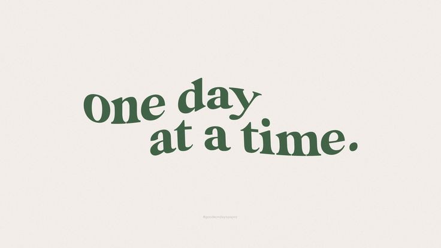

Learn more about the grocery stores that purchase from local farms

- Offers a wide selection of natural and organic foods, such as fresh produce, bulk foods, meats, etc., and most of them are harvest from local farms.
- Operates with a focus on the environment and sustainability
- Supports local farmers and charities
- Offers a wide selection of local, organic and natural foods
- Has done a variety of actions to support the environment such as eliminating use of plastic bags, installing solar panels, etc.
- Supports local farmers and charities